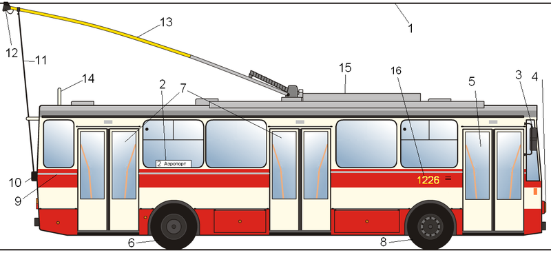

A trolibusz olyan közúti tömegközlekedési elektromos hajtású, gumikerekes jármű, amelyet áramszedők kapcsolnak a felsővezetékhez, amiből a mozgáshoz szükséges energiát kapja. Funkciója általában a közforgalmú autóbuszéhoz hasonló. A trolibusz közúti jármű; a KRESZ definíciója szerint „elektromos felsővezetékhez kötött gépkocsi”.
Az elektromos hajtású közúti járművek története szinte egyidős a villamosokéval. Az első ilyen járművet, dr. Ernst Werner von Siemens találmányát, 1882-ben helyezték üzembe Berlin közelében, egy 540 méter hosszú próbapályán. A korai trolibuszok többféleképpen kapcsolódtak a felső vezetékhez. Elterjedt megoldás volt a kontakt-kocsi – ennél a felső vezetéken egy görgős kiskocsi futott, amit vezeték kötött a járműhöz. Innen származik a „trolibusz” név is, mert a görgős kiskocsit angolul trolley-nak nevezik. Később jelentek meg az egy-, majd kétrudas áramszedőt használó rendszerek. Utóbbi (a Schiemann-rendszer) az 1920-as évektől terjedt végül el, főleg Angliából. Az utolsó egyrudas áramszedőjű trolibusz 1967-ig közlekedett, Norvégiában.
A dízelmotorok csak korlátozott fordulatszám-tartományban képesek működni, és álló helyzetben leállnak. Ezért szükséges az autóbuszokon sebességváltót alkalmazni. A mechanikus váltókat, a vezető kímélése végett a 20. század harmadik harmada óta elektromágneses váltóval helyettesítik. Nem villamos hajtású járművek elindulásakor még a korszerű automatikus sebességváltók mellett is rángatózások jelentkeznek, mert váltás közben pillanatszerűen megszűnik a tengelyekre ható forgatónyomaték. A trolibuszokon mindez teljesen kiküszöbölhető: a korszerű elektromos hajtásoknál megoldható a teljesen sima indulás. Emellett alacsony fordulatszámnál is nagy vonóerő érhető el, így a trolibuszok ideálisak hegyi utakon.
1980-ban gyártásba került csehszlovák Škoda 14Tr trolibusz rajza, vastag betűvel kiemelve a trolibusz-specifikus elemek.
Míg a villamosnál az áramforrás (betáp) második pólusa maga a sín, addig a trolibusznál a jármű földelése nem megoldott. Ez az oka annak, hogy a trolibusznak kettős felsővezetékre van szüksége. A legelterjedtebb vontatási feszültség a világon a 600 V-os egyenáram. Jellegzetesen háromféle felsővezeték-rendszert használnak a világon: a merev rendszerűt, a súlyfeszítéses rendszerűt és a rugalmas felfüggesztésű Kummler & Matter rendszerűt. Ez utóbbit használják Magyarországon leggyakrabban, a rugalmas kialakítás ugyanis nagyobb haladási sebességet tesz lehetővé, mert csökken az áramszedő kiugrásának veszélye.
A rúdáramszedő szénbetétes csúszófejen keresztül érintkezik a felsővezetékkel. Ez a csúszófej olyan kialakítású, hogy a vezeték egyben tereli is a szedő végét, így jön létre a stabil kontaktus. Azonban emiatt vezeték-keresztezésnél a közúti vasúténál bonyolultabb kivitelű szerelvényeket szükséges beépíteni, amelyek a csúszófej folyamatos vezetéséről is gondoskodnak. A kétféle pólusú vezetékeket pedig a rövidzárlat elkerülése végett el kell szigetelni egymástól, ezért vezeték-kereszteződésekben, több helyen árammentes szakaszok találhatóak. Itt a trolibusznak lendületből kell áthaladnia, miközben a vontatófeszültség hiányára jelzőcsengő figyelmezteti a vezetőt.
Budapesten az első trolibuszjárat 1933. december 16-án indult el Óbudán, a Vörösvári út és az Óbudai temető között 7-es jelzéssel. A pesti hálózat első, Király utcai vonalát Sztálin születésének 70. évfordulóján, 1949. december 21-én nyitották meg. A trolibuszjárat ennek tiszteletére a 70-es jelzést kapta. Ezt követően az 1950-es években szinte minden évben indultak új járatok. Napjainkban a vonalhálózat 13 alap- és 3 betétjáratból áll, amit a Budapesti Közlekedési Központ megrendelésére a Budapesti Közlekedési Zrt. üzemeltet. A hálózat hossaz 75,5km, a vonalak száma 16, összesen 172 megállóval.
Az alábbi űrlapon megnézheti a kétszámjegyű járatszámok viszonylatait: